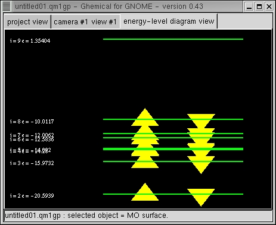

Currently we have no QM code of our own, but we use code "borrowed" from external programs MOPAC7 and MPQC instead. The code from MOPAC7 is included in the package, but the MPQC code is external (at the moment, at least). In order to use the features from MPQC program, you have to compile and install the MQPC program (both version 1.2.5 and newer versions 2.0 are supported) to your system, and recompile the Ghemical program with the MPQC front-end feature enabled. This brings the working MPQC engine available, in addition to the default MOPAC7 engine.
Select "Compute/Setup..." from the popup menu to check the settings for your calculation; hamiltonian / basis set to be used and total charge of the system. Only singlet states with even number of electrons are supported at the moment.
The MOPAC7 engine runs MOPAC7 code in cartesian coordinate (XYZ) mode. User can select one of the following hamiltonians: MNDO, MINDO/3, AM1, PM3. When using MOPAC7 engine please note the following:
The MPQC engine runs the MPQC closed-shell hartree-fock code with no symmetry. User can select any of the standard ab initio basis sets from STO-3G to 6-31G**.
Both QM engines can run geometry optimization, and draw ESP, MO, and MO density plots. Also a specific energy-level diagram view is available that shows molecular orbital indices, energies (in eV) and occupation (you can use mouse tools Zoom and Translate XY to manipulate the diagram):

It is possible to convert MM models to QM models and vice versa. Therefore you are adviced to draw your molecule as a MM model, optimize it to get a good starting structure, and then to convert it into a QM model for further refinement and inspection. To save your QM model, you are adviced to convert it into MM model and then save it (currently there is no file format specified for QM models).
The popup menu in a "Quantum Mechanics" project currently has the following
features: